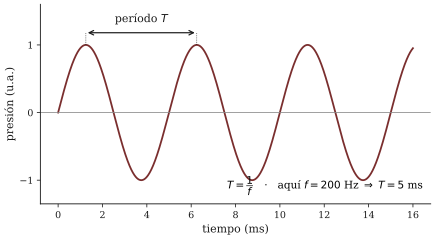

Capítulo 1 — Del golpe al tono
Lectura previa a la sesión 01. Objetivos: OA3.1, OA1.1 (intro), OA2.1 (intro).
Un solo golpe
Antes de leer nada más, haga esto: golpee una vez la mesa con el nudillo y escuche hasta que el sonido desaparezca del todo.
En ese medio segundo pasaron más cosas de las que parece. La madera se deformó una fracción de milímetro y regresó, pero no de una vez: fue y volvió muchas veces, cada vez con menos ganas, como un temblor que se apaga. Ese temblor empujó y succionó el aire que la rodea, y esa perturbación viajó — atravesó la pieza en unos pocos milisegundos — hasta dos membranas que usted lleva a los lados de la cabeza. Lo demás lo puso su cerebro: “golpe”, “seco”, “madera”, “cerca”. Física del objeto, física del aire, fisiología del oído, interpretación. Cuatro eslabones de una cadena que este curso va a recorrer completa, muchas veces, en ambas direcciones.
Y sin embargo, nadie llamaría música a ese golpe. No se puede cantar. No está afinado ni desafinado. No es grave ni agudo — o lo es de un modo tan borroso que no podríamos escribirlo en un pentagrama. Le falta lo que un músico llamaría altura y un físico llamaría… bueno, eso es exactamente lo que hay que averiguar.
Muchos golpes
La pregunta clave de la primera sesión es engañosamente simple: ¿qué le falta a un golpe para ser una nota? Y la respuesta experimental es: le faltan los demás golpes.
Pruebe con un peine y una tarjeta. Pase la tarjeta lento por los dientes: oye una secuencia de clics, un ritmo, casi un compás. Pásela rápido: los clics desaparecen como individuos y en su lugar aparece algo nuevo — un zumbido con altura, una especie de nota rasposa que sube cuando la tarjeta va más rápido. Los golpes no cambiaron; cambió la rapidez con que se suceden, y con ella cambió la categoría entera de lo que usted percibe. Donde había ritmo, ahora hay tono.
Ese tránsito tiene una zona de frontera, y una parte del trabajo en la primera sesión será que usted encuentre la suya: ¿a cuántos eventos por segundo su oído deja de contar y empieza a fundir? No le adelantamos el número — sería arruinarle el experimento — pero sí una pista con siglo y medio de física detrás: no es una frontera nítida sino una zona de transición, es sorprendentemente baja, y no es exactamente igual para su compañero de banco (Benade 1990, cap. 2, hace de esta transición la puerta de entrada a toda la acústica musical; este curso le copia la puerta).

La moraleja, en cambio, sí se puede adelantar, porque es la idea fundacional del semestre: un tono es una vibración que se repite tan seguido que el oído renuncia a contar y entrega, a cambio, una sensación nueva: la altura. Toda nota musical — de una cuerda, de un tubo, de una voz — es, en el fondo, un tren de empujones al aire lo bastante rápido y lo bastante regular.
Dos números para la repetición
Para conversar sobre “qué tan seguido”, el curso necesita solo dos cantidades, y son la misma información mirada de frente y de perfil.
La frecuencia, que anotaremos f, cuenta repeticiones por segundo y se mide en hertz (Hz). El período, T, mide la duración de una repetición, en segundos. Uno es el recíproco del otro:
T = \frac{1}{f}

Si una cuerda vibra a 100 Hz, cada vaivén dura 1/100 de segundo. Si vibra al doble, cada vaivén dura la mitad. Este razonamiento por proporciones — el doble, la mitad, tres veces más — es prácticamente toda la matemática que este curso le va a pedir, y a cambio le va a pedir usarla mucho y con precisión.
Dos números de calibración para que el hertz deje de ser abstracto: el La con que afina una orquesta vibra 440 veces por segundo (La4 = 440 Hz), y un oído joven y sano percibe como sonido las vibraciones entre unos 20 Hz y unos 20 000 Hz. Guarde el primero: 20 Hz. Le va a hacer eco cuando esté con el peine en la mano.
Palabras del mundo y palabras del oído
Hay una distinción que la primera sesión deja instalada y que le conviene traer ya pensada, porque ordena todo lo que sigue. La frecuencia es una propiedad del sonido: se mide con un aparato, y da igual quién esté escuchando. La altura — eso de que una nota sea “más aguda” que otra — es una propiedad de su experiencia: ocurre dentro de un sistema auditivo particular, el suyo, y su relación con la frecuencia es sistemática pero tiene pliegues que darán para varias sesiones (¿duplicar la frecuencia “duplica” la altura? adelanto: no exactamente — la sube una octava, y por qué eso no es lo mismo es una pregunta más honda de lo que parece).
El curso mantendrá esta higiene de vocabulario todo el semestre: frecuencia, intensidad, espectro hablan del mundo físico; altura, sonoridad, timbre hablan de la percepción (Roederer 1997, cap. 1, funda su libro entero en esta separación). No es pedantería: es lo que permite hacer preguntas que se pueden responder midiendo. “¿Por qué esta nota suena más brillante?” no se puede medir; “¿tiene este sonido más energía en los parciales agudos?” sí. Aprender a traducir de la primera pregunta a la segunda es, en una frase, aprender a escuchar como científico.
Lo que viene: un curso con protocolo
En la primera sesión usted conocerá los dos ritos permanentes del curso. Uno es el ciclo predicción → experimento → explicación: nada suena sin que usted haya escrito antes qué espera oír, porque la predicción escrita es lo que convierte un juego en un experimento — sin ella, cualquier resultado “tenía sentido” y no se aprende nada del error. El otro es la escucha del día: cada sesión abre con un sonido y con el protocolo de describir con precisión, proponer un mecanismo y proponer cómo verificarlo. En la sesión 1 se hace una versión sin nota, como línea base: escriba sin miedo, esas hojas se guardan y se las mostraremos de nuevo al final del semestre, cuando el contraste sea elocuente.
Preguntas que la sesión va a responder
- ¿En qué zona — cuántos eventos por segundo — su propio oído deja de oír ritmo y empieza a oír una nota? ¿Le da lo mismo con un clic seco que con un golpe blando?
- ¿Es ese umbral una propiedad del sonido o del oyente? ¿Cómo lo decidiría experimentalmente?
- Si acorta la parte libre de una regla que vibra en el borde de una mesa, ¿el sonido sube o baja? ¿Por qué? ¿Cuánto confía en su respuesta… antes de probarla?
- ¿Qué tendría que medir para convencer a alguien de que dos notas difieren en altura y no solo en timbre?
Referencias del capítulo
- Benade (1990), cap. 2, secs. 2.1–2.3 y EEQ 2.5 — la transición ritmo→tono y los experimentos caseros que la exploran.
- Campbell & Greated (1987), cap. 1 (pp. 5–38) — fuentes y transmisión del sonido musical.
- Roederer (1997), cap. 1 (pp. 9–23) — atributos físicos vs. perceptuales; en español.
- Rossing, Moore & Wheeler (2002), caps. 1–2 — ejercicios numéricos de frecuencia y período, para quien quiera práctica adicional.